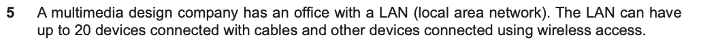
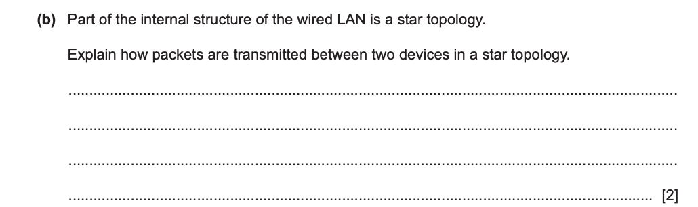
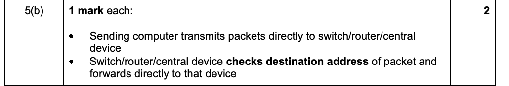

Communicate data · Concept 13
Follow each physical link from sender to receiver
Observe
The same computers, different links
- A, B and C can share a backbone cable.
- They can each have a link to a central switch.
- Additional links can connect pairs of nodes.
Look, then discuss
For each arrangement, which exact links carry a message from A to C?
Discuss the observation
A topology is the arrangement of connections. The drawing is evidence about which neighbouring nodes can exchange data directly, not a suggestion that a message may jump between any nearby symbols.
Explain
Explanation · 1 / 4
Share a backbone in a bus
In a bus topology, devices attach to a shared backbone. A transmission propagates along that shared medium and the addressed receiver accepts the relevant data. Terminators at its ends reduce signal reflections; they do not select a destination. Shared use requires rules for avoiding or handling competing transmissions.
Explanation · 2 / 4
Use the centre of a star
Each star host has a separate link to a central device. With a switch that knows the destination port, A sends to the switch, which forwards towards C: A → switch → C. These are two distinct physical links. Do not draw a direct A–C link that is absent from the network.
Explanation · 3 / 4
Distinguish full and partial mesh
A full mesh connects every pair of nodes directly. A partial mesh has only some pairwise links. Mesh connections can provide alternative routes, but using an alternative depends on a working forwarding arrangement; the drawing alone does not configure the equipment.
Explanation · 4 / 4
Combine patterns in a hybrid
A hybrid uses more than one arrangement, such as classroom stars connected through meshed links between buildings. Describe the local pattern and the connecting pattern separately. A hybrid label does not tell you which individual host has a spare connection.
Work together
Trace a star and count a full mesh
A, B, C and D each connect to switch S. Compare this with a full mesh among the four hosts.
Work together · 1 / 3
Trace the star
A sends over A–S. S checks the destination and forwards over S–C. The complete route is A → S → C, not A → B → C.
Work together · 2 / 3
List full-mesh links
AB, AC, AD, BC, BD and CD are the six distinct pairwise links.
Work together · 3 / 3
Check the count
Each of four nodes has three connections, giving twelve link ends. Each link has two ends, so 12 ÷ 2 = 6 links. More links need more interfaces, cabling and management.
State the actual path and count each physical link only once.
Experiment
Predict the A-to-C path before revealing it. Compare the star with the available mesh arrangement and name each consecutive link.
Find a path after a failure
Send data from A to C. Choose a topology and remove a link or the central switch.
Change conditions
Predict: Can A still reach C? Point to every working link on the path.
S means the central switch. Mesh nodes in this simplified network can forward data along alternative links. A physical route alone is not enough without forwarding support.
Check
Try it yourself · Teacher-written
In a switched star, explain how data travels from one host to another when the destination port is known. What additional property defines a full mesh?
Check your reasoning
The sending host transmits to the central switch. The switch examines the destination address and forwards through the port leading to the receiving host. A full mesh has a direct link between every pair of nodes; a star does not.
Past paper
Attempt the past-paper questions · 2 marks
1 original question · 1 selected part · 2 marks
Suggested independent working time: 3–5 minutes (teacher estimate).
Answer the original questions first. Open guidance, a teacher solution or the official mark scheme when needed. Only the named parts are assigned; extracts also retain their required shared context.
Original question · Cambridge 9618/13
1. Follow a packet through a star topology
Cambridge 9618/13 · May/June 2024 · 5(b) · 2 marks
Selected parts: 5(b) [2].


Hint — reading the question
Describe the path between two devices, rather than just drawing the shape of a star. The central device must do something with the destination address.
Reasoning and model answer — teacher-written
The sending device transmits the packet directly to the central switch. The switch checks the destination address and forwards the packet directly towards the intended receiving device.
Official mark scheme

Why this earns marks — teacher explanation
One mark covers sender-to-centre transmission; the other covers checking the destination and forwarding to the receiving device. The official answer allows a switch, router or central device. In a switched Ethernet LAN the switch uses the destination MAC address.
Common mistakes — teacher analysis
Do not describe a chain through every workstation: that is not the stated star path. A central hub and a switch do not make identical forwarding decisions.
Cambridge past-paper access page ↗ · Source references and page numbers are shown with each extract. © Cambridge University Press & Assessment / UCLES.
Connect
Keep this idea
Topology describes links; a path is an ordered sequence of existing links.
Now remove one connection and see which paths still exist.
Continue: Distinguish a failed host link from a failed centre →Check a common misunderstanding
A full mesh is not the same as any drawing with several cross-links. Check every pair.
Learning goals
- Recognise and explain a bus topology.
- Recognise and explain a star topology.
- Recognise and explain a mesh topology.
- Recognise and explain a hybrid topology.
- Trace transmission between two hosts for a given topology.